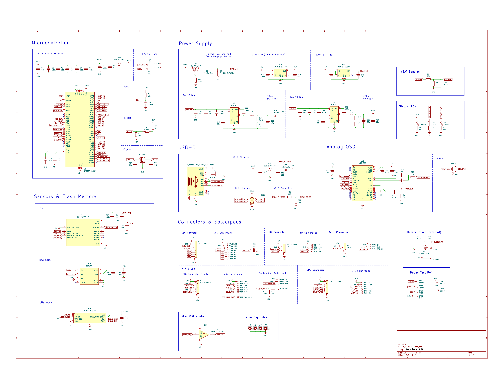

Custom Drone Flight Controller (In Progress)
A 4-layer STM32F405 flight controller I designed from scratch in KiCad, sized and voltage-rated for up to a 5S battery. It's built for one of the drones joining the swarm robotics platform. Schematic and layout are done, gerbers are with PCBWay, and the boards aren't back yet.
Project Overview
- Role: solo project, ongoing
- Status: schematic capture, component selection, and 4-layer routing are complete; gerbers were generated and sent to PCBWay for fabrication; boards haven't come back yet, so nothing below has been bench-tested
- Key hardware: STM32F405RGTx (LQFP-64, Cortex-M4), ICM-42688-P 6-axis IMU (SPI), DPS368 barometer, AT7456E analog OSD, W25Q128JVPIQ 128Mbit (16MB) blackbox flash, dual TPS62933 synchronous buck converters (5V/10V), dual LP5912-3.3 LDOs on isolated 3.3V rails, USB-C with USBLC6-2SC6 ESD protection
- Board: 40.1 × 37.5 mm, 4-layer stackup (signal / GND plane / power plane / signal)
- Tools: KiCad for schematic capture, layout, and DRC; PCBWay for fabrication
Why Build One
This board exists for a real reason: it's meant to fly on one of the drones joining the swarm robotics platform, alongside the ground robots I've already built. But the bigger reason I designed it myself instead of buying a SpeedyBee or Mamba board off the shelf was to actually learn PCB design end to end. I'd watched a lot of videos on how flight controllers are put together, and wanted to go through the real process myself: pick real parts, capture a real schematic, route a dense 4-layer board, and eventually bring up my own firmware on it, rather than just flashing something that already works.
There aren't any exotic design decisions here beyond sizing it for up to a 5S pack. That was intentional. The point of this build wasn't to innovate on flight controller architecture, it was to go through every step of designing one myself and come out the other side actually understanding it.
Power Architecture
Everything on the board runs off a battery-derived SYS_VIN rail, gated through a PMOS reverse-voltage protection stage backed by a 15V zener and a 28V TVS diode for overvoltage clamping, so a reversed battery connector or a voltage spike doesn't take out anything downstream.
- 5V 2A buck (TPS62933): feeds the RX, servo, and general peripheral rail.
- 10V 2A buck (TPS62933): a second independent buck for the VTX rail, so a hungry video transmitter can't sag the 5V rail everything else depends on.
- 3.3V LDO, general purpose (LP5912-3.3): powers the MCU and most digital logic off the 5V rail.
- 3.3V LDO, IMU-only (LP5912-3.3): a second, separate 3.3V regulator feeding only the ICM-42688-P. Splitting the IMU onto its own quiet rail instead of sharing the general 3.3V line keeps switching noise from the MCU and buses off the one sensor where noise actually shows up as bad gyro data.
- VBAT sensing: a resistor divider off
SYS_VINfeeds an ADC input so firmware can read battery voltage directly. - USB-C: its own VBUS path with ferrite-bead filtering and a USBLC6-2SC6 ESD protection IC on D+/D-, so the board can be powered and configured over USB independent of the battery.
Sensors, Storage & I/O
The MCU is an STM32F405RGTx (LQFP-64, Cortex-M4), the same class of chip most current flight controllers are built around. Around it:
- ICM-42688-P — 6-axis IMU on its own SPI bus and its own quiet 3.3V rail (above), for attitude sensing.
- DPS368 — barometric pressure sensor on I2C, for altitude reference.
- AT7456E — analog on-screen-display chip with its own 27MHz crystal, overlaying flight data onto an analog video feed for FPV.
- W25Q128JVPIQ — 128Mbit (16MB) SPI NOR flash for blackbox logging.
I/O is broken out through JST-GH connectors: an 8-pin ESC connector (battery, current sense, telemetry, and four motor signals M1–M4), a 4-pin RX connector carrying SBUS, a 3-pin servo connector, a 6-pin digital VTX connector, and a 6-pin GPS connector that also exposes a second I2C bus for an external compass. SBUS itself comes in inverted, so a small SN74LVC1G14 Schmitt-trigger inverter cleans it up into a normal UART RX line before it reaches the MCU. Analog camera and VTX solderpads, a buzzer driver, three status LEDs, and a full set of SWD/UART debug test points round out the board for bring-up and field debugging.
Layout
The board is 40.1 × 37.5 mm on a 4-layer stackup: signal on the top and bottom copper layers, with a dedicated ground plane and a dedicated power plane sandwiched in between. That's standard practice for a board like this, but it mattered here specifically because of how dense it is — an LQFP-64 MCU, two SPI-connected sensors, an SPI flash chip, an analog OSD chip, and two buck converters all had to be routed and given clean return paths in a footprint barely bigger than a AA battery, without the IMU or the analog video path picking up noise from a switching regulator or a digital bus running underneath them.
Schematic

Current Status & What's Next
The design is done: schematic, component selection, and 4-layer routing are complete, and gerbers have already been generated and sent to PCBWay for fabrication. The boards aren't back yet, so none of this has been bench-tested — no bring-up, no power-rail checks, no live IMU data.
Once the boards arrive, the plan is to assemble it, bring up and verify each power rail before connecting anything sensitive to it, and then write and bring up my own firmware rather than just flashing something existing. After that, it needs to actually go on one of the swarm's drones, which is still ahead of me too.